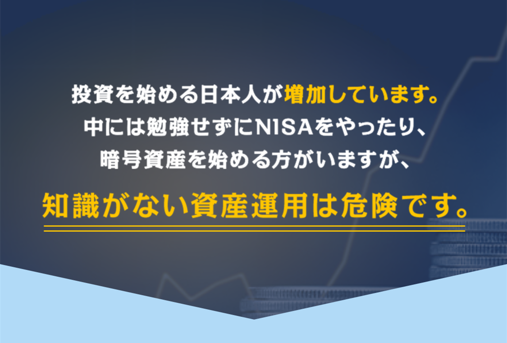

お金持ちはいったい何を考え、何をしているのか――。西村博之氏の最新刊のテーマは「お金」。直近で生じたコロナショックを踏まえて今彼が何を考えているのか。
2014年、経営していた会社が解散し無一文になって6年。莫大な純資産をこの短期間にいったいどう築き上げたのか? お金の基本から、守り方、つくり方。
「お金の真理」とは? 「お金のよい面を引き出すためには、お金とどのように向きあえばいいのか――。もしあなたがお金持ちになりたいのなら、この点について深く考えてみるべきです」（西村博之）

ひろゆき
本名：西村博之
1976年、神奈川県生まれ。東京都に移り、中央大学へと進学。在学中に、アメリカ・アーカンソー州に留学。1999年、インターネットの匿名掲示板「2ちゃんねる」を開設し、管理人になる。2005年、株式会社ニワンゴの取締役管理人に就任し、「ニコニコ動画」を開始。2009年に「2ちゃんねる」の譲渡を発表。2015年、英語圏最大の匿名掲示板「4chan」の管理人に。2019年、「ペンギン村」をリリース。主な著書に、38万部を突破した『１％の努力』（ダイヤモンド社）がある。

投資のプロが教える！【西村博之】特別監修の無料投資学習小组
無一文から純資産70億円―完全復活の秘密をすべて明かす!幸福を呼ぶマネー論
📈老後の安定を目指す投資方法を学びませんか？
🏦新しいNISAで高齢者向けの投資解決策を提供します！
📚ひろゆきと経済学部教授が協力し、無料の投資講座を開講中！
💼老後の生活に役立つ投資の秘訣をお伝えします！
【聴講無料/事前申込制】セミナー詳細・申込みはこちら

はい、月に30〜50％の利益を上げることは実際には難しくありません。 ！
大多数の株主や友人がこの情報を周囲の個人投資家と共有できることを願っています。大多数の善良な友人のために、世界中から専門家を集めた純粋に無料のコミュニケーション グループが設立されました。より多くの個人投資家が次の株式市場への投資で支援を受けることができます。大多数の投資家のために、より多くの投資ユーザーが次の株式市場への投資で助けを得られるように、全国各地から民間の専門家を集めた無料の交換グループも設立されました。交流グループ。をクリック。初心者の方は、この機会を利用して、正しい投資習慣を身につけ、他の人から成功の秘訣をゼロコストで学ぶことができます。あなたが初心者や小ブルジョワジーであれば、この無料体験をお見逃しなく
厳粛に宣言します: 料金は請求されません。私はただ、あなたを助け、火薬のないこの戦争の犠牲者にならないよう手助けしたいと切に願っています。
株式市場では、時間が経てば多くの経験を積むことができますが、経験が必ずしも成功の秘訣であるとは限りません。損失を利益に変える株の買い方を学びたい、現在の経済環境にどう対処すればよいかわからない友人は、

最後に、真実を言わせてください。私は誰かが一夜にして金持ちになるのを手伝ったことはありません。それは現実的ではありませんが、多くの人がお金を稼ぐ正しい方法を学ぶのを手助けしてきました。この方法は20年近く効果があることが証明されていますそしてあなたも同じことができます


【聴講無料/事前申込制】セミナー詳細・申込みはこちら




【聴講無料/事前申込制】セミナー詳細・申込みはこちら